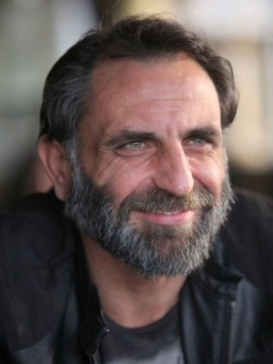
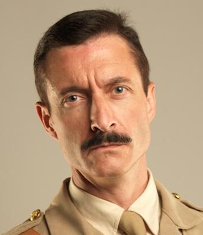
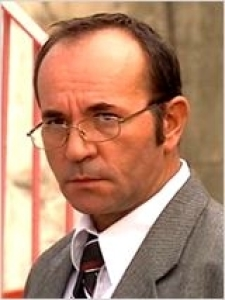

Çanakkale Yolun Sonu
- 
- 
- 

2013 yılı Türkiye yapımı Dram, Savaş, Tarihi film. Çanakkale Savaşı'nda yaşananları merkezine alan film, isimsiz kahramanlar üzerinden Çanakkale cephesini orada yaşananları, kısaca bu dramatik öyküyü yeni bir bakış açısıyla beyazperdeye taşıyor.Takvimler Nisan 1915'i gösterdiğinde I. Dünya Savaşı'nın en çetin cephelerinden biri olan Çanakkale'de işgalci güçler aylardır sürdürdükleri kuşatmadan aylardır hiçbir şey elde edememiş haldedirler. Anzak güçleri daha sonra kendi isimleriyle anılacak olan Anzak Koyu'nda mağlup edilmişlerdir. İçinde isimsiz kahramanlar Muhsin ve Hasan kardeşlerin de yer aldığı Hilal-i Ahmer cemiyetine mensup destek birliği zorlu bir yol sonrası cepheye ulaşır. Ne var ki siperlere girdikleri anda savaşın tahmin edemedikleri sert ve acımasız yüzüyle karşılaşırlar. Muhsin oldukça keskin bir nişancıdır ama her gün ölümle buruna burunadırlar. Yüzbaşı İbrahim Adil, Muhsin'i keskin nişancı olarak görevlendirmiştir ve yüzbaşıdan istediği tek şey kardeşi Hasan'ın cephe gerisinde görevlendirilmesidir. Muhsin bir başka keskin nişancı olan Şeref ile beraber en ön saflardaki düşman askerlerini avlarken keskin hüneri ve Anzak'ları tek tek indirmesi de tüm koya adının duyulmasına neden olacaktır. Fakat Anzak kuvvetlerinin başındaki İngiliz Binbaşı Steward'ın bu namlı Türk askerine karşı manevrası da gecikmeyecektir.915 yılının Nisan ayında I. Dünya Savaşı’nın en zorlu cephelerinden biri olan Çanakkale’de işgalci güçler aylardır sürdürdükleri kuşatmadan hiçbir şey elde edemezler. Anzak güçleri daha sonra kendi isimleriyle anılacak olan Anzak Koyu’nda mağlup olurlar. İçinde isimsiz kahramanlar Muhsin ve Hasan kardeşlerin de yer aldığı Hilal-i Ahmer cemiyetine mensup destek birliği zorlu bir yol sonrası cepheye ulaşır. Ne var ki siperlere girdikleri anda savaşın tahmin edemedikleri sert ve acımasız yüzüyle karşılaşırlar. Çok iyi bir keskin nişancı olan Muhsin, düşman askerlerini birer birer avlar ve düşman askerlerinin arasında namı yayılır. Ancak, Anzakların önderi İngiliz Binbaşı Steward, bu namlı Türk askerine karşı misilleme yapacaktır. Türk tarihi savaş filmleri arasında bulunan yapımda Mehmetcan Diper, Gürkan Uygun, Ben Warwick, Inanç Koçak ve Berrak Tüzünataç rol alıyor